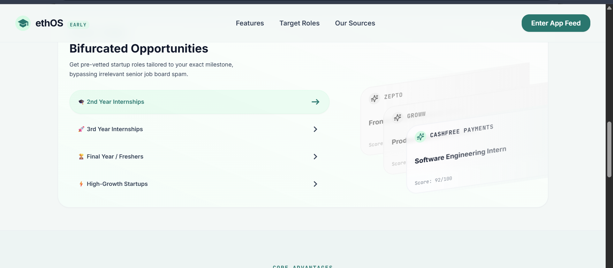
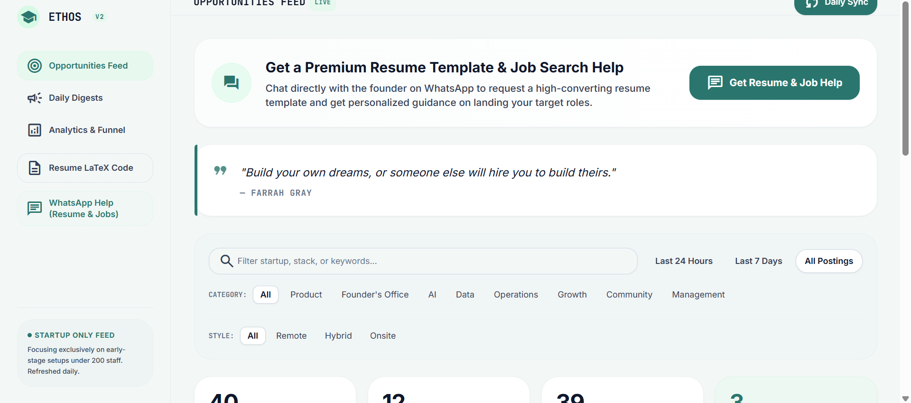
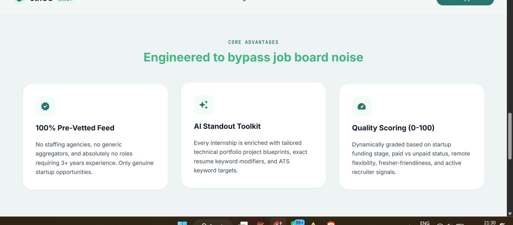
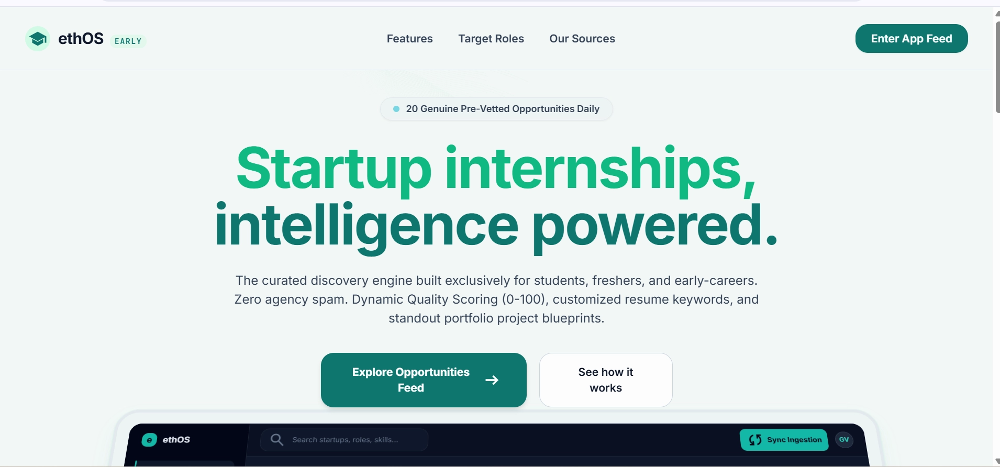
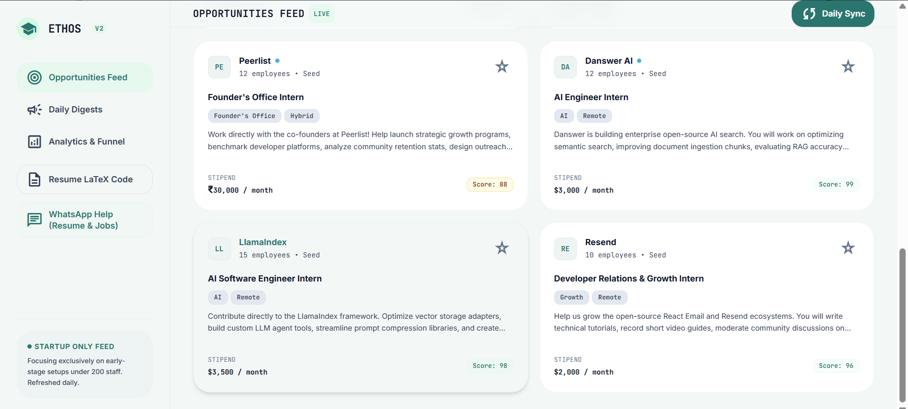

Product Teardown & PRD · Shipped Solo
Every student-facing internship feed has the same failure mode: staffing agencies, dead postings, and roles asking a fresher for three years of experience, all mixed in with the two or three listings that were actually worth applying to. ethOS is the filter that sits in front of that noise.
The Problem
The product's own homepage states the thesis directly: a curated discovery engine built exclusively for students, freshers, and early-careers, with zero agency spam and no roles requiring 3+ years of experience.

Core Advantages
Three mechanisms, each targeting one specific way a normal aggregator wastes a student's time.
01
No staffing agencies, no generic aggregators, and no roles requiring 3+ years of experience. Only genuine startup opportunities make the feed.
02
Every internship is enriched with a tailored technical portfolio-project blueprint, exact resume-keyword modifiers, and ATS keyword targets specific to that listing.
03
Dynamically graded on startup funding stage, paid vs. unpaid status, remote flexibility, fresher-friendliness, and active recruiter signal.

How It Works
A four-stage retrieval pipeline grounds every listing before it ever reaches a score: OAuth ingestion, LangChain orchestration, GPT-4o reasoning, and Pinecone-backed vector search, served through a FastAPI + PostgreSQL backend.
Segmentation
A 2nd-year student and a final-year fresher are not competing for the same role, so the product refuses to hand them the same feed. Roles are tailored to the exact milestone the user is at, bypassing irrelevant senior job-board spam.

The Feed
Filterable by category, work style, and recency, with a live sync badge so the feed reads as current rather than a stale scrape.
| Company | Role | Stipend | Score |
|---|---|---|---|
| Peerlist | Founder's Office Intern · Hybrid | ₹30,000 / month | 88 |
| Danswer AI | AI Engineer Intern · Remote | $3,000 / month | 99 |
| LlamaIndex | AI Software Engineer Intern · Remote | $3,500 / month | 98 |
| Resend | Developer Relations & Growth Intern · Remote | $2,000 / month | 96 |

Startup-only feed, by policy. The product deliberately focuses exclusively on early-stage setups under 200 staff, refreshed daily, rather than mixing in large-company postings that would win on brand recognition but lose on genuine access for a first-time applicant.
Retention & Growth
The AI toolkit stops at the resume keyword layer; a WhatsApp line staffed by the founder closes the gap for anyone who wants a real resume template or job-search guidance, turning a cold feed into a channel with a person behind it.
